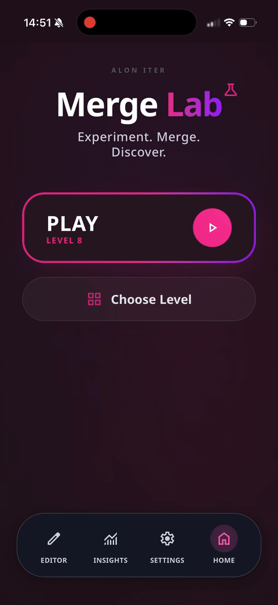
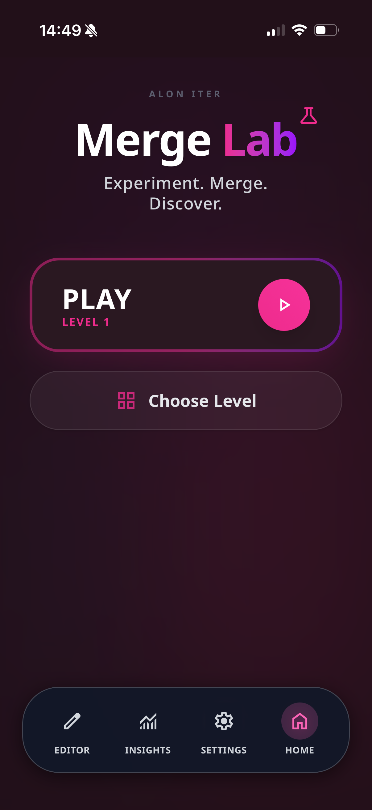
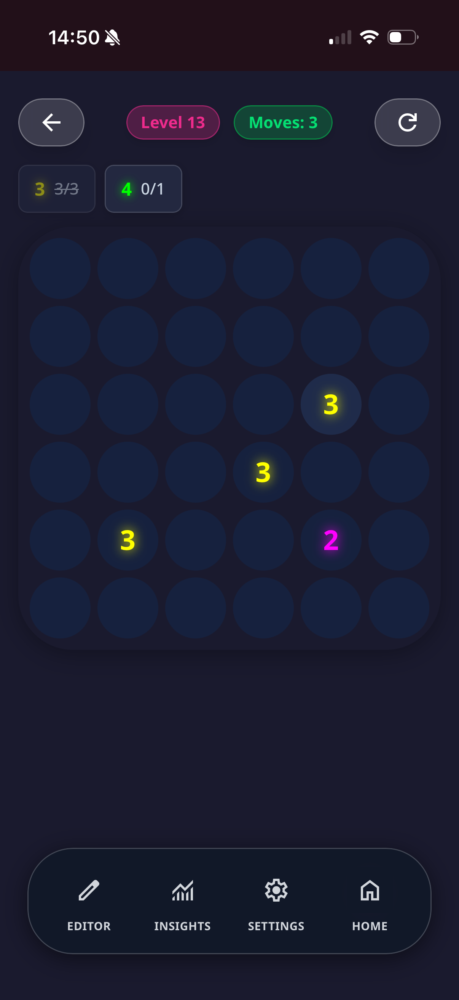
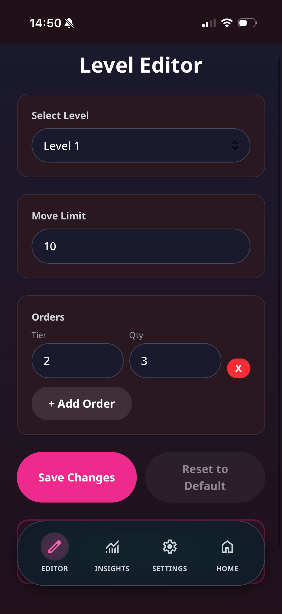
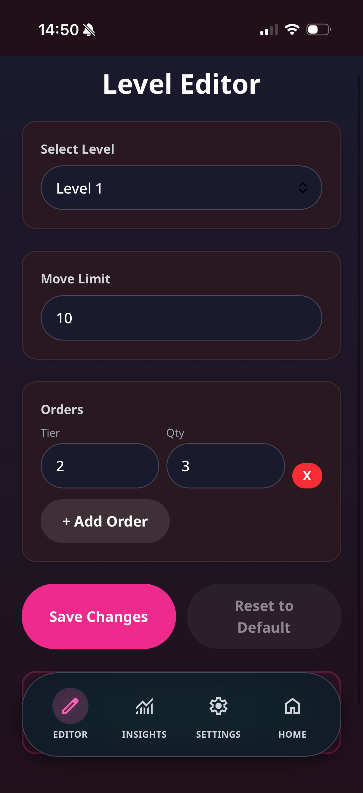
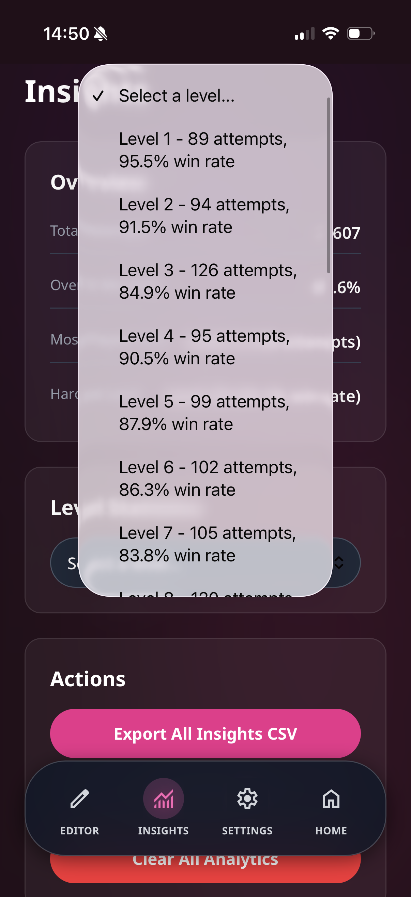
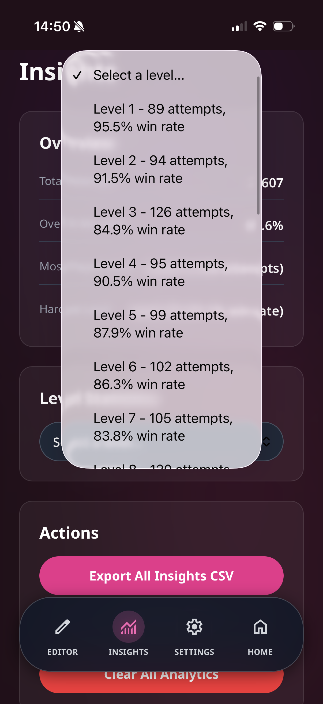
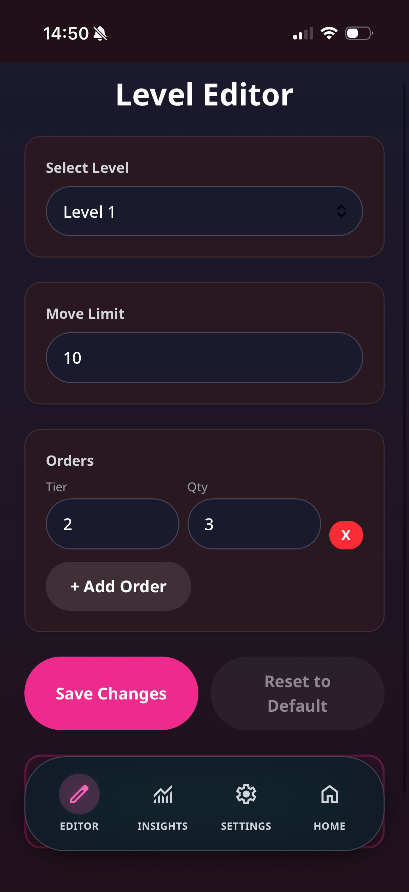
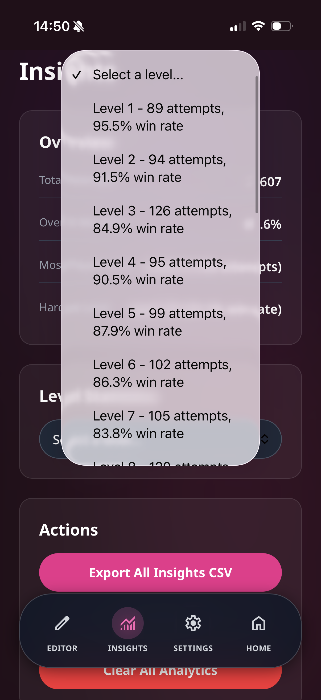

Overview
Merge Lab is a mobile-first merge puzzle game built to test iteration loops based on player data. It features a custom-built Level Editor and an on-device Insights dashboard, allowing for rapid balance tuning without external tools.
Key Features
- Order-Based Objectives: Tiered goals per level with strict move limits.
- Level Editor: In-app tool to adjust move limits and orders instantly.
- Insights Dashboard: Tracks attempts, win rates, and level difficulty in real-time.
- Analytics Export: CSV export for deeper analysis.
- Configurable Settings: Dark mode, sound toggles, and data reset.
Data, Insights, Iteration
The core goal of this project was to practice data-driven balancing.
Hard Facts & Metrics
- Total Attempts: 2,607
- Overall Win Rate: 69.6%
- Most Played Level: Level 3 (126 attempts)
- Hardest Level: Level 30 (34.1% win rate)
Per-level examples: L1 95.5%, L2 91.5%, L3 84.9%, L4 90.5%, L5 87.9%, L6 86.3%, L7 83.8%
Iteration Loop
- What the data showed: Early levels (L1-L2) had >90% win rates, validating the onboarding. L3 dropped to 84.9%, marking the first challenge point.
- Decisions made: Used the win-rate drop at L30 (34.1%) to identify a difficulty spike, then used the Level Editor to adjust move limits.
- Tooling impact: Building the Level Editor reduced the "tweak-to-test" cycle from minutes (code deploy) to seconds (in-app edit).
Screens



 

 



Tech Stack
Vanilla Web (HTML/CSS/JS).
What I Learned
- Balancing via Metrics: Learned to look at the "Hardest Level" (34.1%) not just as a number, but as a friction point requiring action.
- Instrumentation Mindset: Built lightweight analytics first, not last. Exporting to CSV allowed for sanity checks outside the app.
- Tooling Speed: The Level Editor proved that investing time in internal tools pays off by drastically shortening iteration cycles.
- Mobile UX: refined navigation consistency between Editor, Game, and Insights views to ensure smooth "developer experience" even on a phone.
Next Improvements
- Add A/B testing support to serve different move limits to different user segments.
- Visualize the "drop-off funnel" directly in the Insights dashboard.
- Cloud save support for cross-device testing.